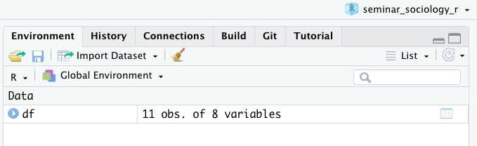

Chapter 3 データの読み込み
本章では、Rを使ってデータを読み込む方法を説明する。
内容に入る前に、右上のプロジェクトのボックスの横が、前章で作成したプロジェクトの名前（たとえば、seminar_sociology_r）になっているかどうかを確認しておこう。なっていない場合は、右上のボックスをクリックして、「Open Project…」を選択し、前章で作成したRprojファイル（たとえば、seminar_sociology_r.Rprojといったような名前になっている）を選んで、プロジェクトを切り替えよう。
本章では以下の3つのパッケージを使用するので、あらかじめパッケージを読み込んでおこう。
3.1 Rのサンプルデータの読み込み
Rにはいくつかのサンプルデータがあらかじめ入っており、これを読み込んで試しに分析することもできる。ここでは例としてAnscombe’s Quartetのデータをみてみよう：
anscombe## x1 x2 x3 x4 y1 y2 y3 y4
## 1 10 10 10 8 8.04 9.14 7.46 6.58
## 2 8 8 8 8 6.95 8.14 6.77 5.76
## 3 13 13 13 8 7.58 8.74 12.74 7.71
## 4 9 9 9 8 8.81 8.77 7.11 8.84
## 5 11 11 11 8 8.33 9.26 7.81 8.47
## 6 14 14 14 8 9.96 8.10 8.84 7.04
## 7 6 6 6 8 7.24 6.13 6.08 5.25
## 8 4 4 4 19 4.26 3.10 5.39 12.50
## 9 12 12 12 8 10.84 9.13 8.15 5.56
## 10 7 7 7 8 4.82 7.26 6.42 7.91
## 11 5 5 5 8 5.68 4.74 5.73 6.89このデータにdfという名前をつけて格納する。
df <- anscombeこのようにデータフレームをオブジェクトに入れると、右上の「Environment」のウインドウに次のような表示が現れる。

11 obs. of 8 variablesと書かれている。11 obs.というのは、「このデータフレームは全部で11行ありますよ」ということを示しており、8 variablesというのは、「このデータフレームには8つの列がありますよ」ということを示している。実際にどのようなデータが読み込まれているかは、上記画像のdfあたりをクリックするか、次のコードを実行すると新しいタブが開き、そこにデータの中身が表示される。
df %>% view()
このようなデータが読み込まれているはずだ。
その他にも、データのうち一部を表示したり、変数の一覧を表示したりするコマンドがある。ここではコードを紹介するにとどめるので、各自で実行してみてほしい。
df %>% head()
df %>% names()
df %>% glimpse()3.2 作業ディレクトリ上のデータの読み込み
3.2.1 データを置く場所を作る
前章ではプロジェクトを作成して、Rに作業を行う場所（作業ディレクトリ, working directory）を教えてあげた。この場所に、データを置くためのフォルダを別途作成しておくとよい。作成する方法は以下の2つである。
- 作業ディレクトリとして設定したフォルダを開き、右クリック→「新規フォルダ」（Mac）または「新規作成」→「フォルダ」を選択（Windows）。フォルダの名前は「data」としよう。
- 以下のコードを実行する。
dir.create("data")フォルダを作ったら、下記のコードを実行して練習用のデータをダウンロードしよう（コピー&ペーストでよい）。コードを実行すると、先ほど作った「data」フォルダにダウンロードしたデータが入っていることを確認しよう。
download.file("https://github.com/mugiyama/seminar_sociology_r/raw/master/data/census_pop.csv", destfile = "data/census_pop.csv")
download.file("https://github.com/mugiyama/seminar_sociology_r/raw/master/data/census_pop.xlsx", destfile = "data/census_pop.xlsx")
download.file("https://github.com/mugiyama/seminar_sociology_r/raw/master/data/census_pop.rds", destfile = "data/census_pop.rds")
download.file("https://github.com/mugiyama/seminar_sociology_r/raw/master/data/census_pop.sav", destfile = "data/census_pop.sav")
download.file("https://github.com/mugiyama/seminar_sociology_r/raw/master/data/census_pop.dta", destfile = "data/census_pop.dta")3.2.2 csv形式のファイル
example.csvというふうに、末尾に.csvとついているのはcsv形式といって、一つひとつの値をカンマで区切った形式である。readr::read_csv()でcsv形式のファイルを読み込むことができる。readrというのはtidyverseパッケージを読み込むと読み込まれるパッケージの一つである。
df <- read_csv("data/census_pop.csv")3.2.3 xlsx形式のファイル
census_pop.xlsxというふうに、末尾に.xlsxとついている（古いExcel形式だと.xls）のはMicrosoft Excelのデータ形式である。readxl::read_excel()でxlsx形式のファイルを読み込むことができる。readxlは冒頭で読み込んだパッケージである。
df <- read_excel("data/census_pop.xlsx")3.2.4 rds形式のファイル
census_pop.rdsというふうに、末尾に.rdsとついているのはRびデータ形式である。rds形式で保存されたデータは、Rで読み込むうえではもっとも便利な形式である（が、rds形式で社会調査の個票データが提供されることはまれ）。readr::read_rds()でrds形式のファイルを読み込むことができる。
df <- read_rds("data/census_pop.rds")3.2.5 sav形式のファイル
census_pop.savというふうに、末尾に.savとついているのはSPSSという統計ソフトのデータ形式である。SSJDAなどからデータを借りた場合にはSPSS形式であることがほとんどである。haven::read_sav()でsav形式のファイルを読み込むことができる。havenは冒頭で読み込んだパッケージである。
df <- read_sav("data/census_pop.sav")3.2.6 dta形式のファイル
example.dtaというふうに、末尾に.dtaとついているのはStataという統計ソフトのデータ形式である。haven::read_dta()でdta形式のファイルを読み込むことができる。
df <- read_dta("data/census_pop.dta")3.2.7 文字コードに関わる問題
ファイルを読み込む際に、ファイルのなかに日本語が含まれていたりすると、エラーが起こることがある。このあたりの問題への詳しい対処は土井翔平先生のページに記載されているので、参考にするとよい。
3.3 ウェブ上のデータの読み込み
ウェブサイト上にExcel形式のファイルやcsv形式のファイルがアップロードされている場合、それを直接読み込んでくることができる。たとえば、e-Stat上にアップロードされている国勢調査の主要時系列データのうち、「年齢（５歳階級），男女別人口－全国（大正９年～平成27年）」のデータを読み込んでみよう。先ほどの文字コード絡みの問題があるため、read_csv()に少しくふうを加えている。
file_url <- "https://www.e-stat.go.jp/stat-search/file-download?statInfId=000031524030&fileKind=1"
df <- read_csv(file_url, locale = locale(encoding = "shift-jis"))## Rows: 406 Columns: 7## ── Column specification ────────────────────────────────────────────────────────
## Delimiter: ","
## chr (2): 元号, 年齢5歳階級
## dbl (5): 和暦（年）, 西暦（年）, 人口（総数）, 人口（男）, 人口（女）##
## ℹ Use `spec()` to retrieve the full column specification for this data.
## ℹ Specify the column types or set `show_col_types = FALSE` to quiet this message.Windowsユーザーの場合は以下で大丈夫かもしれない（未確認）。
df <- read_csv(file_url)ただし、何度もアクセスするのは当該ウェブサイトのサーバーに負荷をかけてしまう。頻繁に更新されるようなファイルでなければ、自分のパソコン上にダウンロードしたほうがよいだろう。download.file()でファイルをダウンロードできる。
download.file(url = file_url, destfile = "data/census_pop_original.csv")ダウンロードしたデータは、これまでと同じように、csvやexcelなどの形式に対応するかたちで読み込んでやればよい。
df <- read_csv("data/census_pop_original.csv", locale = locale(encoding = "shift-jis"))## Rows: 406 Columns: 7## ── Column specification ────────────────────────────────────────────────────────
## Delimiter: ","
## chr (2): 元号, 年齢5歳階級
## dbl (5): 和暦（年）, 西暦（年）, 人口（総数）, 人口（男）, 人口（女）##
## ℹ Use `spec()` to retrieve the full column specification for this data.
## ℹ Specify the column types or set `show_col_types = FALSE` to quiet this message.Windowsユーザーの場合は以下で大丈夫かもしれない（未確認）。
df <- read_csv(file_url)なお、先ほど紹介した各種形式の「census_pop」のデータは、今ダウンロードしてきたデータに少し手を加えて麦山が作成した練習用データである。